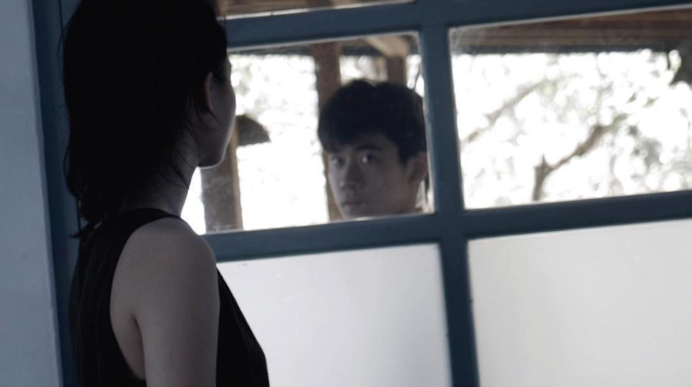
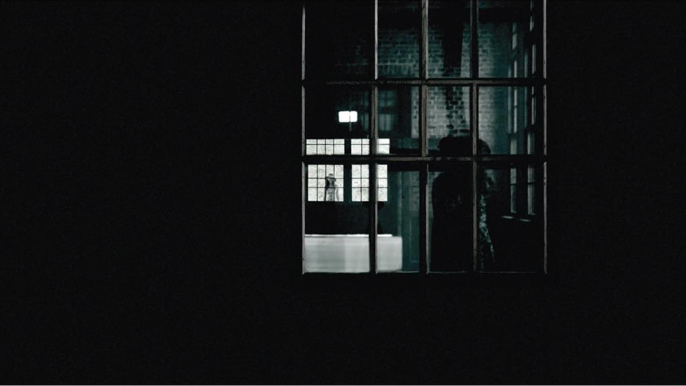
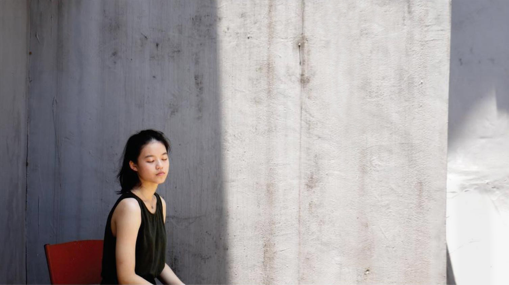
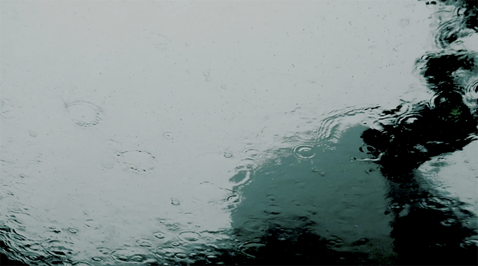
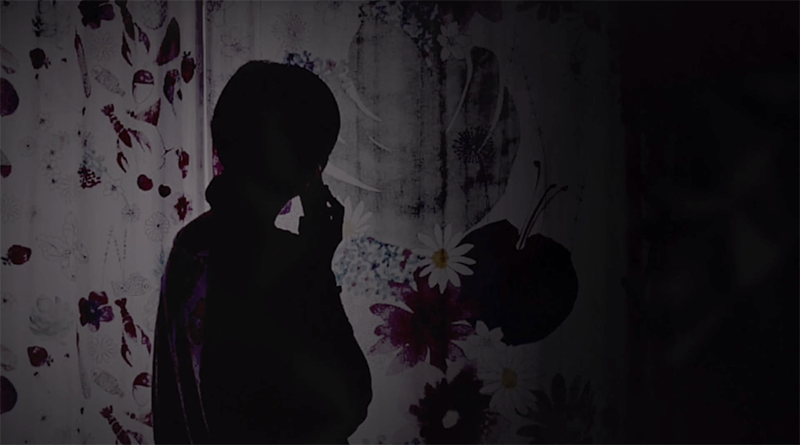

Your browser does not support the video tag.
Your browser does not support the video tag.
    
微語 Whismuring
(2017) 中文版本, English Version
2017 MOD微電影創作大賽 - 最佳潛力獎 MOD Microfilm Festival - Best Potential Award
演出人員 Performance by: Irene Chen 陳柔茵, 黃郁涵 Rebecca Huang, 莊哲一 Benjamin Zhuang, Annie Yu 游珺婷